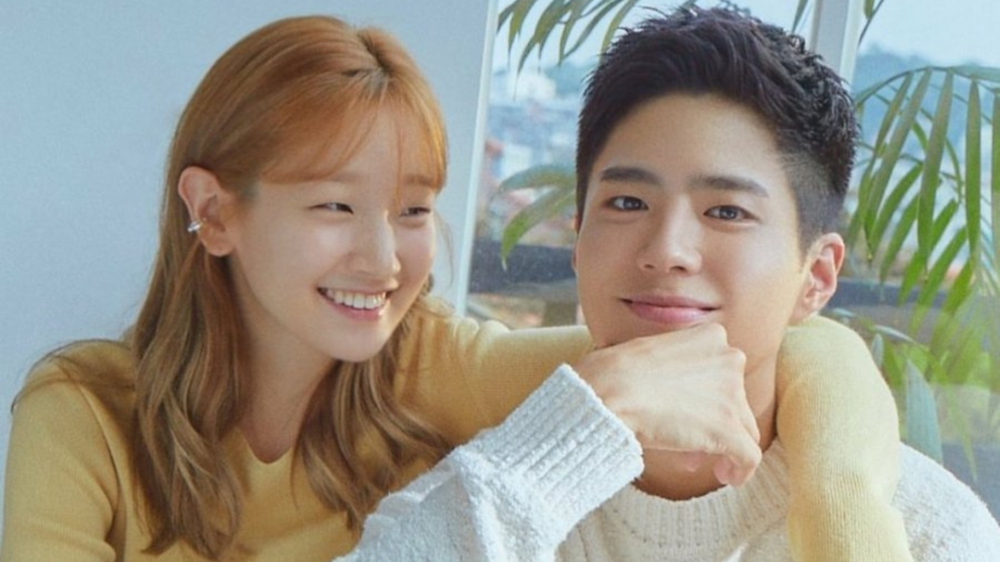

Recuerdos de juventud es un drama coreano de 2020 que explora los desafíos de un grupo de jóvenes que intentan triunfar en el competitivo mundo de la moda y la actuación en Seúl. La trama sigue las vidas de un modelo que aspira a ser actor, una maquilladora y un modelo en ascenso. La historia se centra en Sa Hye-jun (interpretado por Park Bo-gum), un modelo talentoso que lucha por encontrar oportunidades de actuación en una industria donde las conexiones a menudo son más importantes que el talento. Su mejor amigo, Won Hae-hyo (Byeon Woo-seok), también es modelo, pero proviene de una familia adinerada que apoya su carrera. Esto crea una fricción latente entre ambos mientras persiguen sus metas.
Recuerdos de juventud es un drama que ofrece una mirada a la ambición, los sueños y la realidad de la industria del entretenimiento. Es una historia sobre el crecimiento personal y las relaciones que se forman y terminan, dejando una impresión duradera como un recuerdo valioso. Aunque su final ha generado debate, es una obra que resuena con la lucha por el éxito.